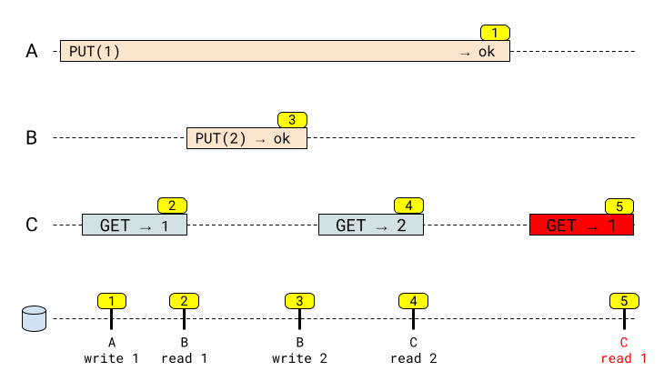

This is Part 5 in a series of posts describing the Raft distributed consensus algorithm and its complete implementation in Go. Here is a list of posts in the series:
- Part 0: Introduction
- Part 1: Elections
- Part 2: Commands and log replication
- Part 3: Persistence and optimizations
- Part 4: Key/Value database
- Part 5: Exactly-once delivery (this post)
In this part, we're completing the implementation of a replicated key / value database based on Raft consensus. At the end of Part 4 we discussed a consistency issue that may arise due to client retry logic; now is the time to address it.
All the code for this part is located in this directory.
Adding an APPEND operation to our database
As a quick reminder, these are the basic operations our KV DB from part 4 supports:
- PUT(k,v): assign value v to key k
- GET(k): retrieve the value associated with key k
- CAS(k, cmp, v): atomic compare-and-swap. First, it reads curV - the current value associated with key k. If curV==cmp, assigns value v to k instead; otherwise, it's a no-op. In any case, curV is returned.
Let's add another operation to this set; this is APPEND(k,v), which appends v to the value of key k (in our implementation, keys and values are both arbitrary Go strings); if there was no k in the DB before this operation, it behaves like PUT(k,v).
For example, consider this sequence of commands (in order from left to right):
PUT("x","foo") APPEND("x", "bar") APPEND("y","hello")
Applied to an empty DB, these commands will result in these keys / values:
x=foobar
y=hello
The problem with client retries - demonstrated with APPEND
The way our KV client works is described in detail in Part 4. As a reminder, the client tries the KV services one by one, submitting a command to them until it gets a success response from a leader. The client also remembers which service was the leader the last time it tried, to avoid wasting time on the search next time.
Suppose we've already submitted PUT("x","foo") successfully to the database, and now we want to send the APPEND("x","bar") command. Suppose also that our client remembers that service B was the leader (in a cluster of three services: A, B and C). It sends the APPEND("x","bar") request to service B. What happens if the client doesn't get a response from B? It assumes something happened to B (maybe it has crashed or was partitioned from the network), and retries the same request - sending it to C.
But now suppose that B actually received the APPEND command and committed it to the Raft cluster, but crashed before sending the HTTP response back to the client (or maybe the HTTP response got delayed beyond the client's timeout, due to a network glitch). Due to the same error, B then loses cluster leadership. The client will keep retrying this request, until it finds a leader that answers with success; therefore, the APPEND may be applied twice (or even more times, if the failure mode recurs) and the value of x in the DB will end up being "foobarbar". This is bad!
You may be tempted to blame the client's retry behavior here; but let's think this through. Suppose we didn't have the client layer doing retries; we send an APPEND command to a service, and don't hear anything back. What do we do next? Is there any way to know that the request was actually committed? Well, we can send a GET request to check, but this quickly gets complicated in a real distributed system, because our operation is no longer atomic (some other client may have changed the key's value since then, so what is our GET supposed to check?).
The problem isn't the retry itself; it's retrying with insufficient safety guarantees in the core algorithm.
Solving the retry problem with command de-duplication
The problem described above isn't just an issue in our implementation. It's explicitly called out in the original Raft paper, in section 8:
However, as described so far Raft can execute a command multiple times: for example, if the leader crashes after committing the log entry but before responding to the client, the client will retry the command with a new leader, causing it to be executed a second time. The solution is for clients to assign unique serial numbers to every command. Then, the state machine tracks the latest serial number processed for each client, along with the associated response. If it receives a command whose serial number has already been executed, it responds immediately without re-executing the request.
The paper also suggests a solution to the problem, and this is what we're going to implement. If we can uniquely identify commands committed to the Raft log, the KV service can avoid applying the same commands twice.
The idea is to identify commands uniquely as follows:
- Each client has a globally unique ID
- Each command sent by a client has a unique ID, distinct from all other IDs sent by the client. Moreover, to make our algorithm efficient this ID is monotonically increasing; assuming each client has its own monotonic clock, a command sent at time will have an ID larger than a command sent at iff .
In our APPEND example, let's say the client's ID is 42, and let's say the ID of the APPEND("x","bar") command it sends is 1. The command is sent to B, which commits it successfully - with the ID tuple (42,1) - to the Raft log; B crashes before responding to the client, so the client retries the command with C. Since it's the same command, it has the same ID tuple (42,1). The KV service in C will notice that such an ID was already applied, and will not apply it again [1]!
Implementing de-duplication
We'll start with the client. Two fields are added to the KVClient struct:
// clientID is a unique identifier for a client; it's managed internally
// in this file by incrementing the clientCount global.
clientID int64
// requestID is a unique identifier for a request a specific client makes;
// each client manages its own requestID, and increments it monotonically and
// atomically each time the user asks to send a new request.
requestID atomic.Int64
The clientID field is assigned when a client is created, using a global atomic that auto-increments:
func New(serviceAddrs []string) *KVClient {
return &KVClient{
// ... other fields
clientID: clientCount.Add(1),
}
}
// clientCount is used to assign unique identifiers to distinct clients.
var clientCount atomic.Int64
This provides uniqueness for our tests, but in realistic applications you'll probably want something stronger. A simple and pragmatic approach could be using an UUID here - I'll leave this as an exercise for motivated readers.
The requestID field tracks the ID of the last request this client has sent. Each time the client sends a new request, this is incremented [2]. For example, here's the new Append method:
// Append the value to the key in the store. Returns an error, or
// (prevValue, keyFound, false), where keyFound specifies whether the key was
// found in the store prior to this command, and prevValue is its previous
// value if it was found.
func (c *KVClient) Append(ctx context.Context, key string, value string) (string, bool, error) {
appendReq := api.AppendRequest{
Key: key,
Value: value,
ClientID: c.clientID,
RequestID: c.requestID.Add(1),
}
var appendResp api.AppendResponse
err := c.send(ctx, "append", appendReq, &appendResp)
return appendResp.PrevValue, appendResp.KeyFound, err
}
Both IDs are part of the HTTP request sent to service. Here's the request struct for appends:
type AppendRequest struct {
Key string
Value string
ClientID int64
RequestID int64
}
The other commands are modified similarly; all the retry logic (in the send method) remains the same - it just keeps retrying with the same client+request IDs.
The changes in the service are slightly deeper, but not too difficult overall. First, we add a field to the KVService struct:
// lastRequestIDPerClient helps de-duplicate client requests. It stores the
// last request ID that was applied by the updater per client; the assumption
// is that client IDs are unique (keys in this map), and for each client the
// requests IDs (values in this map) are unique and monotonically increasing.
lastRequestIDPerClient map[int64]int64
We also add some fields to the Command struct:
// ClientID and RequestID uniquely identify the request+client.
ClientID, RequestID int64
// IsDuplicate is used to mark the command as a duplicate by the updater. When
// the updater notices a command that has a client+request ID that has already
// been executed, the command is not applied to the datastore; instead,
// IsDuplicate is set to true.
IsDuplicate bool
As a reminder, Command is the "payload" we submit to the Raft log [3].
The bulk of the logic is in the goroutine running runUpdater:
func (kvs *KVService) runUpdater() {
go func() {
for entry := range kvs.commitChan {
cmd := entry.Command.(Command)
// Duplicate command detection.
// Only accept this request if its ID is higher than the last request from
// this client.
lastReqID, ok := kvs.lastRequestIDPerClient[cmd.ClientID]
if ok && lastReqID >= cmd.RequestID {
kvs.kvlog("duplicate request id=%v, from client id=%v", cmd.RequestID, cmd.ClientID)
// Duplicate: this request ID was already applied in the past!
cmd = Command{
Kind: cmd.Kind,
IsDuplicate: true,
}
} else {
kvs.lastRequestIDPerClient[cmd.ClientID] = cmd.RequestID
switch cmd.Kind {
case CommandGet:
cmd.ResultValue, cmd.ResultFound = kvs.ds.Get(cmd.Key)
case CommandPut:
cmd.ResultValue, cmd.ResultFound = kvs.ds.Put(cmd.Key, cmd.Value)
case CommandAppend:
cmd.ResultValue, cmd.ResultFound = kvs.ds.Append(cmd.Key, cmd.Value)
case CommandCAS:
cmd.ResultValue, cmd.ResultFound = kvs.ds.CAS(cmd.Key, cmd.CompareValue, cmd.Value)
default:
panic(fmt.Errorf("unexpected command %v", cmd))
}
}
// Forward this command to the subscriber interested in its index, and
// close the subscription - it's single-use.
if sub := kvs.popCommitSubscription(entry.Index); sub != nil {
sub <- cmd
close(sub)
}
}
}()
}
This relies on the IDs from each client being monotonically increasing, and thus we only have to maintain O(1) of state per client [4]. When we apply a client request to the state machine, we remember the ID of this request. If the code is ever asked to apply the same ID (or a lower ID), it refuses, marking the command as IsDuplicate=true instead. Then, the HTTP handler that tried to submit the command has to deal with this situation; for example, in handleAppend:
sub := kvs.createCommitSubscription(logIndex)
select {
case commitCmd := <-sub:
if commitCmd.ServiceID == kvs.id {
if commitCmd.IsDuplicate {
kvs.sendHTTPResponse(w, api.AppendResponse{
RespStatus: api.StatusDuplicateRequest,
})
} else {
kvs.sendHTTPResponse(w, api.AppendResponse{
RespStatus: api.StatusOK,
KeyFound: commitCmd.ResultFound,
PrevValue: commitCmd.ResultValue,
})
}
} else {
kvs.sendHTTPResponse(w, api.AppendResponse{RespStatus: api.StatusFailedCommit})
}
case <-req.Context().Done():
return
}
For duplicates the service returns a special API status: api.StatusDuplicateRequest. Our client treats this as an error and surfaces it to the user. As an exercise, try changing it so the return value from duplicates is normal (success). The challenge here is to record - for each request - what the result is for returning to the client (e.g. the previous value of a key in case of PUT or APPEND).
Revisiting our consistency guarantees
In Part 4, we've discussed the consistency guarantees of our KV service in detail, and concluded that it's strict serializable, which is the strongest consistency guarantee for distributed systems.
However, when adding the client module we've also noted that - due to the client retry problem - the whole system is no longer linearizable (and hence no longer strict serializable). Linearizability extended to the client is known to be tricky; this isn't surprising - after all, the client is yet another network-connected component in the system, with inherently unreliable communication to the service.
With de-duplication, our entire system is strict-serializable again. Even if a client re-sends a command that was already committed to the Raft log, this retried command won't be committed a second time due to the de-duplication logic. Users will not observe non-linearizable behavior.
Exactly-once delivery
The discussion around delivery semantics can get quite heated - people have strong feelings about a topic in which academic rigor is often insufficiently applied. Still, I'll take the chance of discussing these semantics in the context of the Raft-based KV DB we've built through this series of posts.
Consider a case in which we have no client retries. A client submits a user's request just once to the underlying Raft service. Raft guarantees that if the system is sufficiently connected (e.g. there are enough live and connected peer to achieve consensus), the command will be applied to the Raft log once. The Raft protocol is both theoretically and practically proven at this point, so let's take this as an axiom. So we can say that without client retries, a command is delivered at most once. It can fail to be delivered (if there's a persistent network partition preventing the Raft cluster from having enough live peers for consensus), but it will not be delivered more than once.
For some applications, at most once delivery is a sufficient guarantee. Think about some sort of distributed logging or telemetry, for example. This isn't the case for the kind of KV DB we're trying to build, though, because it's intended to serve as a rock-solid basis for other distributed applications.
Next we've added client retries; this is essential in light of the imperfect physical world in which our code operates. With client retries, assuming the HW and network is working "in the long term" (e.g. network partitions get fixed within some reasonable time, and crashing servers get restarted or replaced), we get at least once semantics. The client will just keep retrying until it gets notified that the command was applied. However, as we've seen at the beginning of this post, this also means duplicate delivery when some failure scenarios occur.
The goal of adding de-duplication is to move our system to exactly-once delivery. Exactly-once delivery is a highly debated topic, but with some reasonable real-world assumptions, it can be achieved. Consider our implementation, for example (with de-duplication of retries). As long as the network and HW are not permanently broken, a command will either be applied exactly once to the DB, or the client will be notified of an error.
Here's a post by Ron Garret where he provides a useful framework to think about this. The post is long but worth reading; here's a quote I liked:
If you can get at-least-once delivery, you can build exactly-once on top of that
I believe this Raft series has demonstrated how this is done. Another interesting read is this post by the Kafka developers where they discuss how exactly-once semantics were added to Kafka a few years ago. If you read it you'll see it's pretty much the same technique - client retries with de-duplication of commands in the distributed log.
Finally, in Designing Data-Intensive Applications, Martin Kleppman touches upon this topic in several places; for example, in chapter 12 he discusses exactly-once execution of operations and the engineering required to make it possible.
Conclusion
This concludes our series of posts on implementing a full Raft consensus module in Go, and building a strictly serializable KV DB on top of it.
For any questions or comments about these posts or the code, please send me an email or open an issue on GitHub.
Appendix 1: Retries with PUT and linearizability
In this post we've added an APPEND operation to demonstrate the issues that arise with retries and duplication. But APPEND differs significantly from the original operations we've discussed in part 4: it's not idempotent. Applying APPEND more than once creates an invalid value, which isn't true for PUT - if we had retried PUT multiple times, the only outcome would be writing the result twice.
While this seems logical on the surface, it turns out that even without operations like APPEND, the system isn't linearizable if retries without de-duplication are allowed. Here's a diagram (following the style of my post on linarizability) that demonstrates the issue:
This diagram describes a single "register", let's assume the key "foo". Let's also assume that before any writes, the default value of all keys is 0. Here's what happens:
- Client A issues a PUT('foo',1) request. The request gets committed by the leader, which crashes before a reply is made to the client. The client will continue periodically retrying.
- In the meantime, a new leader is elected. Client C reads the value of the register and gets a successful response (since the PUT of 1 was committed).
- Client B uses the new leader to commit a new PUT, with value 2.
- Client C reads the value of 2 from the register.
- Client A's retry reaches the new leader, which commits another instance of PUT('foo',1), overwriting the value 2. Now when client C reads the register again, it gets 1 again.
This sequence isn't linearizable; as far as the clients are concerned, since operation (2) retrieved the value 1, it means (1) finished before (2); the result of (4) also means that (3) happened after (1). This makes (5) impossible in a linearizable system.
This is a known failure scenario in distributed systems; it's called lost update. In our example, the PUT(2) operation is essentially lost outside a brief window just following it. The retry of PUT(1) overwrites it.
Appendix 2: lost updates in etcd with client retries
To demonstrate that the issue discussed in this post isn't purely academic, here's a real world example.
etcd is an industrial-strength key value DB based on Raft. It's used extensively inside k8s and other projects. While the etcd service itself is strict serializable, some of its client libraries turned out to have the exact retry problem described in this post.
Here's a Jepsen analysis of jetcd, a Java-based client that automatically retries on failures. The analysis concludes that this mechanism results in loss of linearizability, and recommends to disable it. There's also a lengthy discussion in a GitHub issue with the etcd developers about this. And another issue has interesting information as well.
The Jepsen analysis has a great quote which I want to repost here, because it's so relevant to our discussion (and Appendix 1 in particular):
It is easy to assume that set(x, 5) is idempotent because applying it twice in a row still produces the state x = 5. However, this operation is not longer idempotent if its executions are interleaved with other writes—then, it leads to lost update.
Interestingly, etcd doesn't support operations like APPEND at all. It can be emulated with transactions, however, since etcd's data store is versioned. These features also allow one to be more careful around failures when non-linearizable behavior isn't acceptable. For example, we can perform writes like this:
1. Read revision --> $rev
2. TXN
if mod_revision(k) == $rev
PUT(k, v)
This will only assign store(k)=v if there were no changes to the DB in the meantime. The failure scenario shown in Appendix 1 cannot happen, because each successful write increments the revision of the store. If unsuccessful, this sequence of operations can be retried safely (its only problem is with liveness, not safety).
| [1] | For this reason it's important to store the ID of the command in the Raft log along with the command itself - we need this de-duplication to work across peers. |
| [2] | If you're concerned that a client may send more than 9.2 quintillion requests in its lifetime, this is easy to change to an arbitrarily large number using math/big.Int. |
| [3] | And we also reuse it to communicate results back from the updater goroutine to request handlers - this is why IsDuplicate is there. A simple refactoring exercise could be to use a separate data structure for this purpose. |
| [4] | This assumes the total number of distinct clients this service is dealing with is not overly large; in realistic systems, this is a reasonable assumption. In extreme cases, if we foresee having to deal with an unbounded number of clients, some sort of "garbage collection" scheme should be maintained (we can "forget" a client after some timeout of not hearing from it). |